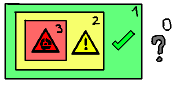

SCG (Social and Communication Guidelines) - are guidelines to do zero-danger communication and social interactions
The purpose of SCG is to do anything without any risk to get doxxed or get banned/kicked/muted or hated
Or for surviving or escaping a drama or conflict
1. Polarization
Polarization - is a state of being divided into two or more groups
Everything can be polarized - politics, religion, race, gender, etc
The basics mostly for the virtual world but can be used on real in some way or another
Exists two sides of internet: high polarazied and low polarized
You can use modular social masking (in chapter 2) so you can speak with people from both sides
High Polarazied Environment (HPE) is a place where you can create dialogs easily
But at the same time most dangerous and fun environment
This allows to be in the center of the conversation by creating a new topic about 1 of groups
All people is very different from other groups so created decentralized environment like reddit, discord or 90-s blogs
Where all people polarazied the same way inside, but in centralized high polarized environment can be chaotic
Easpacilly if polarazied topic is controversial, and people from both sides gonna fight with each other
If you can't stay neutral (about this in future) and you in not required spotlight you can try to move to another controversial topic
A topic that easier for you and attempt 2 to be neutral
Also you can create a discussions for entertainment, when people each at other from both sides and you being neutral watching it
To make this you can start a controversial topic (keep in mind that works only in chat-like like discort) and try to stay neutral
With right setup you can make people do conflict for everything, and just get fun or escape for excess spotlight
If you don't care about morale compass when to get spotlight you can make ragebait (i don't recommend that)
High polarazied environments are almost died today
Low Polarized Environment (LPE) in another hand, is a place where all is the same
Where dominance in one side or theres all neutral and highly censored
Examples or LPE / half-LPE: instagram, real life, youtube, tiktok
This place more safe, but is also less fun and harder to create new dialogs
The reason is because poeple are mostly act the same, they like robots that do nothing
Here do nothing in fact because the main target to be safe is stay neutral, again
Stayng neutral is tactic to escape spotlight, this means don't do anything, or say that you don't know about this sides
Don't be scared to lie. Don't go to polarized toughts. Or you can just say you don't care about both sides and create
A discussion with fighing with both sides (works only in HPE because there's a sides)
HPE (unstable state) is always go to LPE (stable state) with time
And remember that 1 mistake and it will stay in internet history forever!
2. Modular Social Masking (MSM)
You have a person that hate a thing that you like and person that like that thing
What you do? Modular Social Masking (MSM) - is a way to manipulate personality based on situation
It's basically just liying to yourself and other people about your personality
So you can say you hate this thing too, but for other person that you like it
If it's HPE environment you can say you never know what it is so you can escape from spotlight
With MSM you can be in diferent sides at the same time, or escape from any situation
Or another way, be controversial saing against two sides at the time
Just don't forget to remeber what personality from what place / situation
Wrong personality in wrong time is bad idea, just remember that trust no one!
But what when you don't know what polarized or is it at all? You can determ what MSM use with careful hearing about item
NEVER ASK DIRECTLY! DON'T SAY OR MENTION ABOUT ITEM! JUST LISTEN AND WATCH!
You can ask sneaky questions about item not directly, exists few methods to do it
- No-both indirect question (Something like "What's twig (stick) mean?"),
when people can't know that you know about item but dependent on answer you can
- Yes-both indirect question (Something like drawing specific picture with "Write what on it"),
when people can know that you know about item and dependent on answer you can
And remember that 1 mistake and it will stay in internet history forever!
3. Community Classification Systems
Community Classification Systems (CCS) - is a way to classify people based on their determination and behaviour
Understanding CCS allows understand how people think, and predict stereotypes or working with then
Basically it's has 4 levels of level of determination or activism
Numbers of communities always is multiple of 2, because of bi-polarization into two sides: haters and community itself
(In red triangle in image is a radioactivity/toxicity sign, bad draw skills)

level 0 (null/undefined) - A person that not part of community
It can be neutral, support, not care or hate, nothing special
level 1 (part of) - A person that a part of community
It's understandle. But people from level 0 somethimes can assign a stereotypes or misunderstanding because of levels above
Event if person don't fit to the stereotype, but they very rare is even a reason for stereotype
They can be oposite of the stereotype or your exceptions because of how people are different
You can't know for sure if person is part of community or not, unless they say about it or in some minor thing
Example of the minor thing: "I use arch btw!" or a flag on avatar, etc.
They can understand why steoereotype exists and can have hating some clans in community (about this in chapter 4)
And have a good live, it's hard know how many of them and you never find they in most of the time
level 2 (deep) - A person that too match in the community
They mostly reason for some stereotypes or even most in some times
You know from the distance that poeple are part of the community in 100% percent, unlike from 1 level where it can be 50% maximum
They always show pictures, logos and symbols of the community and sais more about it, too much in facts, no matter how much important
They like everyone in community and more likely given priviliges to poeple in community, ratser than equaly
They just scream at people about stereotypes and they can be source of the stereotype, but they rare
And probably do stopid things and annoying to people from levels 1 and 0
They have change to be chronicaly online so they easier to find
level 3 (extreme/danger) - The most rare type of person, probably the source of sterotypes and reason to ruin image of community
They ALWAYS toxic and destructive for everyone, even community probably can have then, they arguments makes no sense
And they place community in the first place, even higher than lives of millions, the often a karens, zoo/pedo-philes
Or criminals that do something illegal, this poeple somethimes even damage a internet and create massive hate to the community
They must be elliminated (digital or physicaly) for everyone happines
You don't need to find them, they come for you in the house
The 1/2/3 ratio can be different for each community, and everyone for each one based on they
World inside, or world outside. For example 1%:95%:4% ratio for gen alpha or 70%:25%:5% for lgbt or feminism
and 50%:40%:10% christians, this just example and can be not real ratios, it's just example
It's very important to know the ratio of the community so you know what to expect
Also demographics can play role for example ru#ians are level 3 and they must burn in hell
4. Community building tree
Community always present as a whole but in 100% they split inside to the sub-communities
They can building as a tree (like linux-distros), some sub-communities can don't like other sub-communities
Some can have multiple sub-comminities, some level 1 person that newbie or years in community
Can like or be part of multiple sub-communities, even if sub-communities don't like each other
But all sub-communities have common umbrella of the community
They mostly share levels ratio, but they can be different too
But if you talk about sub-communities you can talk to then as community, because they shear the same traits and methods
That community struct-trait do
If community have a indetification symbols (flag, icon, name, logo, trademark, etc)
Sub-communities can have the same symbols too, but can have other personal symbols too
Sub-community that are cult can be too so be careful
5. Another tips
Never scream and show anger/scary/sadness when people around
Trust no one
Speak less as possible
You can hate or love polarazied item if you don't care about it. Because if you love or hate it when you don't care
You don't care about item and you don't care that people use or you use this item are different things
Don't speak about thing then you don't know people though about item
Never say honest opinion if exists people with more control than you
Always be extremely careful about what you say, internet remembers everything, someone always watching at you!
Don't be sceared to lie